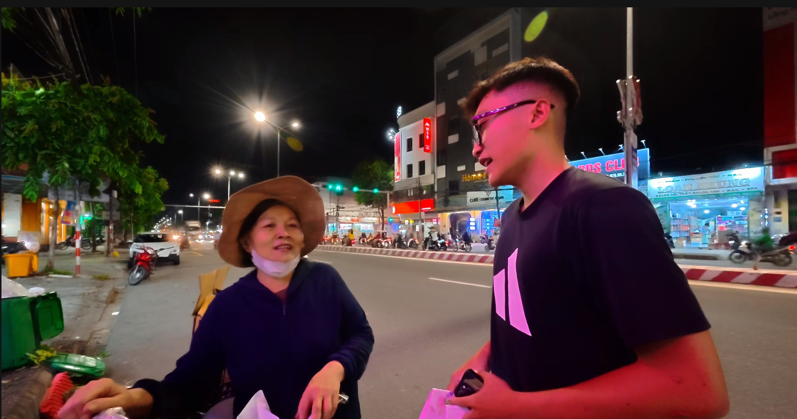
01
Câu chuyện của
Cô Quyên
Hằng ngày, cô mưu sinh bằng công việc thu gom phế liệu và chăm lo cho gia đình. Vì cuộc sống bận rộn, cô hiếm khi có thời gian để chăm chút cho bản thân.
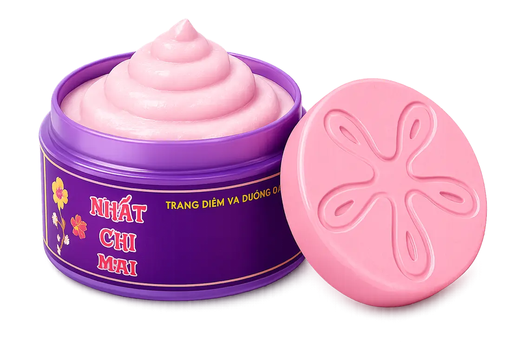
Một viên phấn nhỏ, bảy tầng tinh tuý — mang theo bí quyết làm đẹp triều Nguyễn và bàn tay thủ công gìn giữ qua nhiều thế hệ.
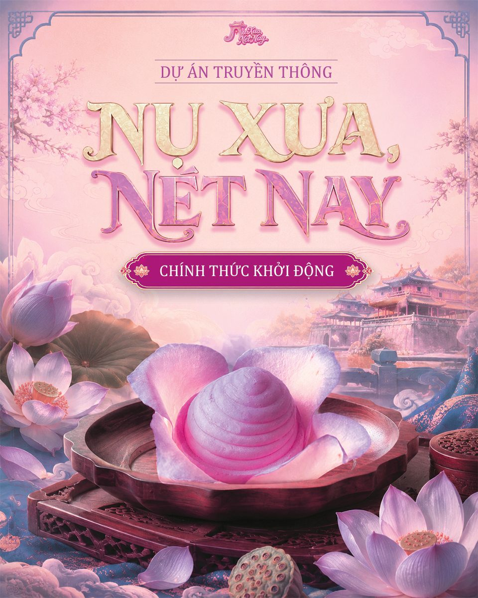
Một hành trình kể lại câu chuyện Phấn Nụ cung đình Huế bằng góc nhìn hôm nay — từ di sản, nguyên liệu, quy trình đến những sản phẩm Phấn Nụ NUZ đang được gìn giữ và lan toả.
Khám phá công dụngVì sao một viên phấn lại được nhắc đến như nét đẹp rất riêng của xứ Huế?
Phấn Nụ là dòng mỹ phẩm thiên nhiên có nguồn gốc từ Huế, gắn liền với bí quyết làm đẹp được lưu truyền trong chốn cung đình xưa. Sở dĩ được gọi là "Phấn Nụ" vì mỗi viên phấn có hình dáng nhỏ nhắn, mềm mại như một nụ hoa.
Bấm vào khung hình bên dưới rồi cuộn (lăn) chuột để tự tay "lật" từng khung hình viên Phấn Nụ hé nở — từng khoảnh khắc được ghi lại tỉ mỉ như chính đôi bàn tay làm nên nó. Bấm ra ngoài khung hình để tiếp tục lướt trang.
Bấm vào khung hình rồi cuộn chuột để phóng to / thu nhỏ, xem trọn từng khoảnh khắc Kéo (vuốt) thanh trượt để lật từng khung hình, xem trọn từng khoảnh khắc
Nhỏ gọn, thuôn tròn, mềm mại — mang trong mình nét đẹp của người phụ nữ Huế xưa.
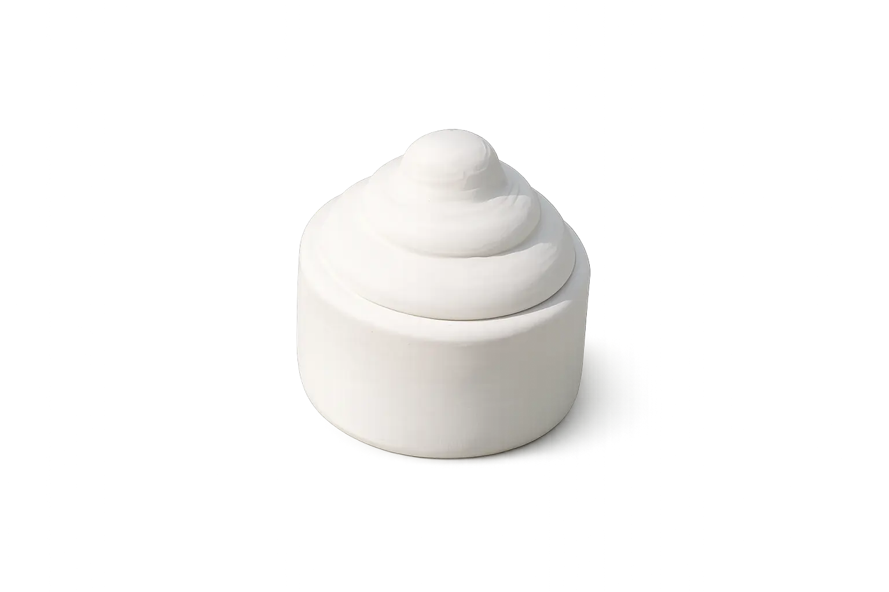
Viên Phấn Nụ mang dáng vẻ nhỏ gọn, thuôn tròn và mềm mại như một nụ hoa vừa hé nở. Thiết kế ấy không chỉ giúp người dùng dễ cầm nắm mà còn gợi lên vẻ đẹp thanh khiết, dịu dàng – tinh thần đặc trưng của người phụ nữ Huế xưa.
Điểm đặc biệt của Phấn Nụ là cấu trúc 7 tầng được xếp chồng lên nhau. Mỗi tầng được tạo tác thủ công, cân đối và hài hòa, tạo nên một tổng thể thanh thoát nhưng vẫn rất vững chãi.
Đối với nhiều người, hình dáng ấy còn gợi nhớ đến Tháp Thiên Mụ – biểu tượng nổi tiếng của cố đô Huế.
Dù đây là một sự liên tưởng về mặt hình ảnh hơn là nguồn gốc thiết kế đã được xác nhận, nét tương đồng ấy góp phần làm nổi bật bản sắc Huế trong từng viên Phấn Nụ.
Tinh hoa mỹ phẩm cung đình Huế – được gìn giữ, kế thừa và phát triển qua nhiều thế hệ.
Ẩn trong từng hạt phấn nhỏ là sự hoà quyện của những nguyên liệu thiên nhiên được chọn lọc kỹ lưỡng.
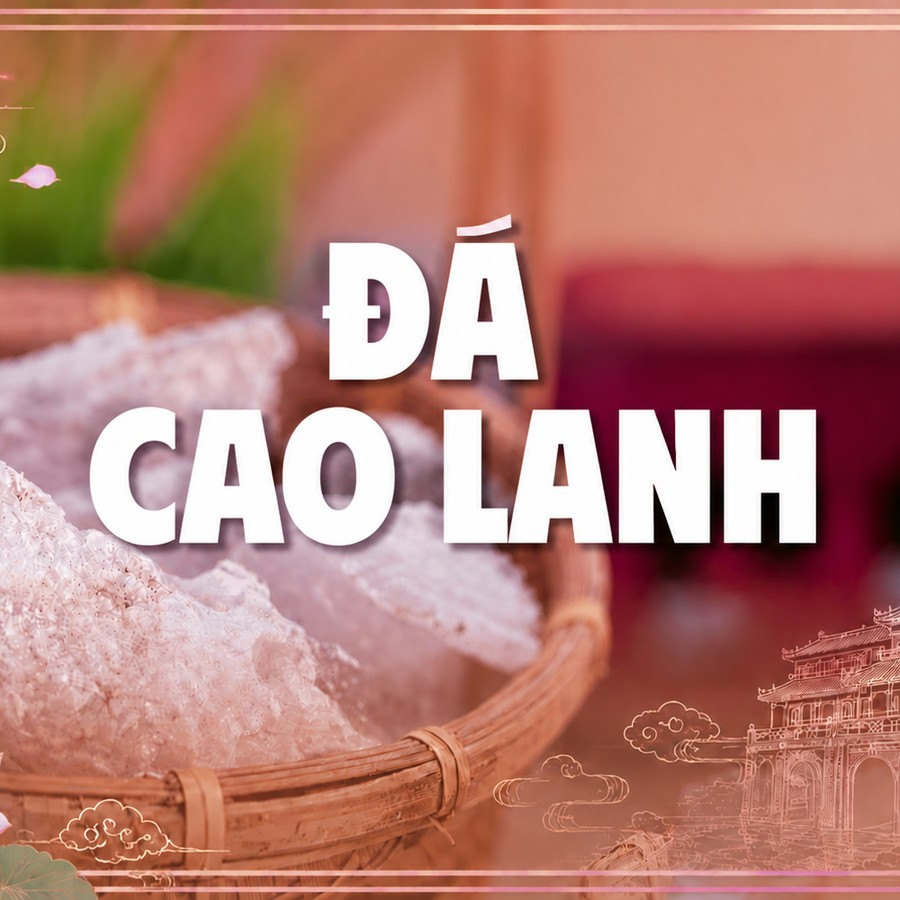
Tạo nên độ mịn nhẹ đặc trưng, giúp hút bã nhờn, giữ da khô thoáng và mang lại lớp phủ mỏng nhẹ, tự nhiên.
Dịu dàng như một "người bảo vệ" làn da — thanh nhiệt, làm dịu và hỗ trợ giảm cảm giác mẩn đỏ, khó chịu.
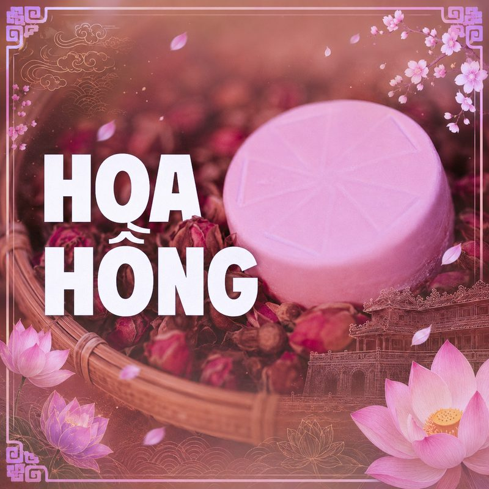
Mang theo nét nữ tính và thanh tao, tạo hương thơm nhẹ nhàng, giúp làn da mềm mại, tươi sáng hơn.
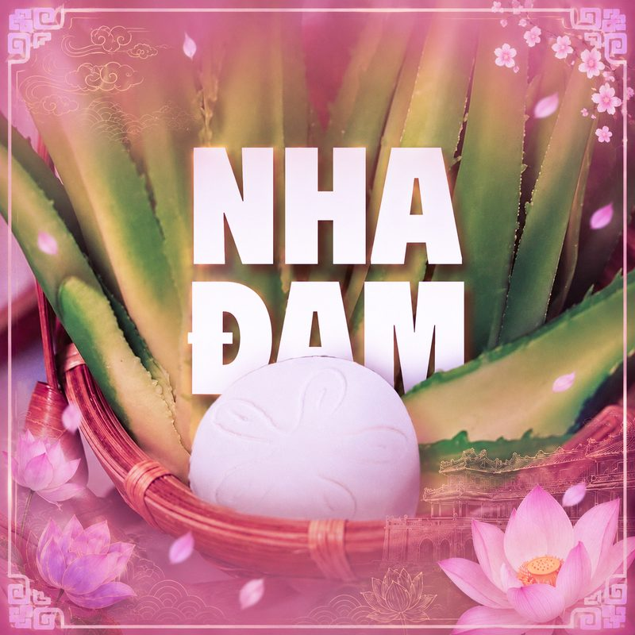
Như làn gió mát lành — cấp ẩm, làm dịu da và hạn chế cảm giác khô khi sử dụng phấn.
Nếu Phấn Nụ là một nét đẹp được truyền qua nhiều thế hệ, thì cao lanh chính là linh hồn đứng sau câu chuyện ấy.
Từ những khối đá cao lanh tinh khiết, được nung bằng than cao cấp, rồi chuyển sang màu trắng đục, mềm hơn và dễ nghiền thành lớp bột mịn — mang tính mát, hỗ trợ kháng khuẩn và kiềm dầu tự nhiên theo Đông y.
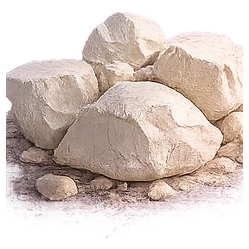
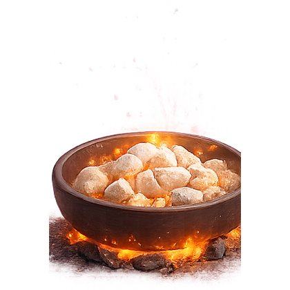
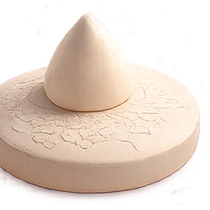
Đằng sau mỗi "nụ phấn" nhỏ bé là cả một quy trình thủ công tỉ mỉ, được gìn giữ qua nhiều thế hệ — trải qua 7 bước chính.
Không nằm ở những lời quảng cáo, mà đến từ những công dụng đơn giản và thiết thực trong chăm sóc da hằng ngày. Chạm vào từng thẻ để xem chi tiết.
Hấp thụ dầu thừa, giữ da khô ráo và bền màu lớp nền suốt nhiều giờ.
Xem chi tiết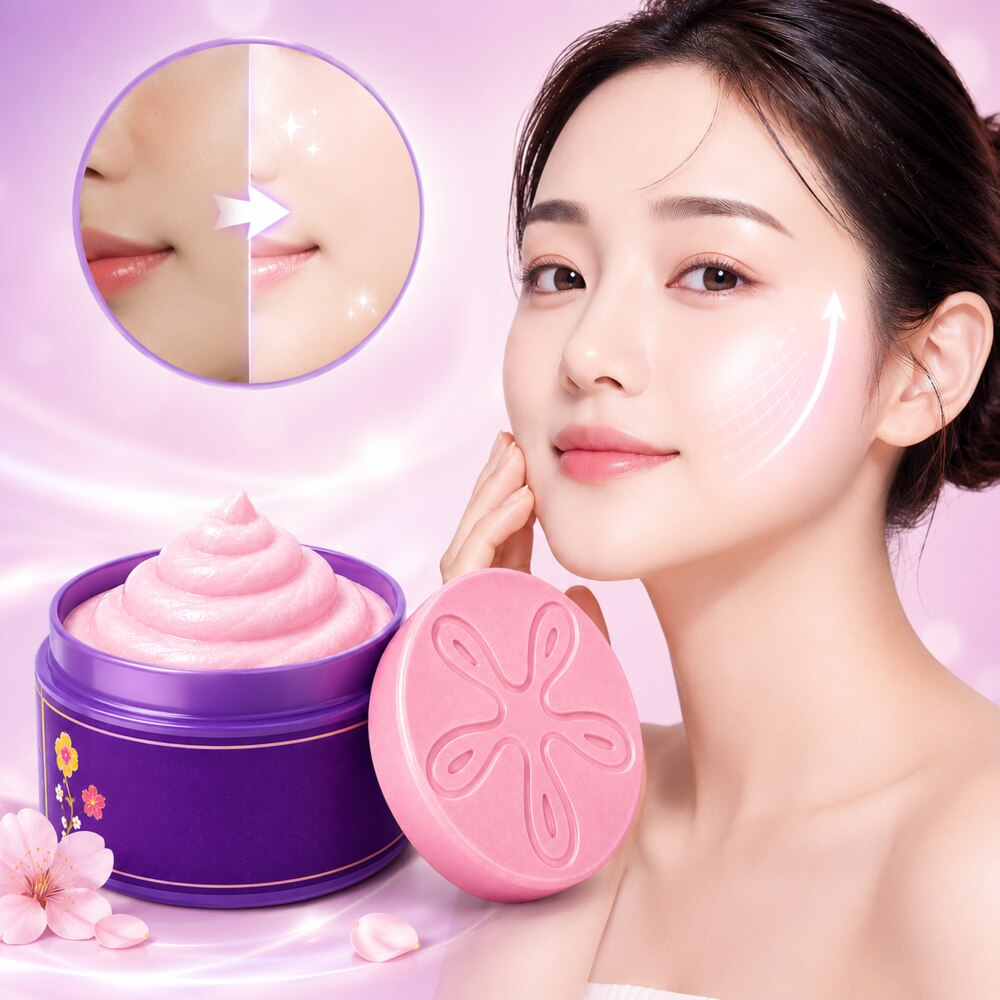
Nâng tông tự nhiên, đều màu da mà vẫn giữ vẻ tươi sáng, không bệt phấn.
Xem chi tiếtKhông hương liệu tổng hợp, dịu nhẹ và an toàn cho cả làn da nhạy cảm.
Xem chi tiếtKết cấu mềm mượt, dễ tán đều, mịn lì mà vẫn thông thoáng, không bí da.
Xem chi tiết"Một làn da đẹp không cần quá nhiều lớp trang điểm, chỉ cần được chăm sóc đều đặn mỗi ngày."
Hành trình của chúng mình bắt đầu tại nơi sản xuất Phấn Nụ Nhất Chi Mai ở Huế.
Tại đây, nhóm được tìm hiểu quy trình làm phấn thủ công và lắng nghe câu chuyện của người giữ nghề.
Những hình ảnh, kiến thức và trải nghiệm thực tế được chia sẻ qua video trên Facebook.
Sau chuyến đi, chúng mình tiếp tục lan tỏa câu chuyện Phấn Nụ qua website và mạng xã hội.
Mong rằng hành trình nhỏ này sẽ giúp nhiều người trẻ hiểu và trân trọng hơn giá trị văn hóa Huế.
Hành trình thực tế tại nơi sản xuất Phấn Nụ Nhất Chi Mai
Sau khi tìm hiểu về Phấn Nụ, chúng mình tiếp tục hành trình bằng cách trao tặng những viên phấn nhỏ như một lời cảm ơn và sự trân trọng dành cho những người phụ nữ luôn âm thầm chăm lo cho cuộc sống mỗi ngày.

01Hằng ngày, cô mưu sinh bằng công việc thu gom phế liệu và chăm lo cho gia đình. Vì cuộc sống bận rộn, cô hiếm khi có thời gian để chăm chút cho bản thân.
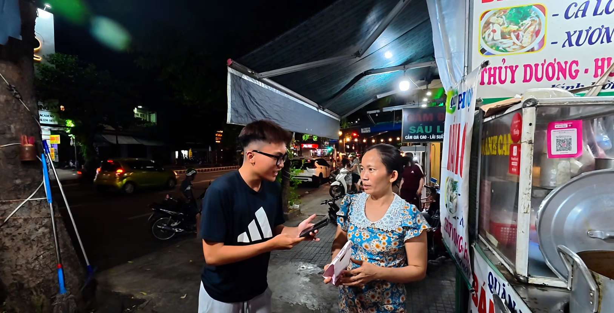
02Mỗi ngày, cô tất bật với công việc phụ quán. Dù từng nghe nhắc đến Phấn Nụ, việc chăm sóc sắc đẹp cho bản thân thường phải nhường chỗ cho những bộn bề mưu sinh.
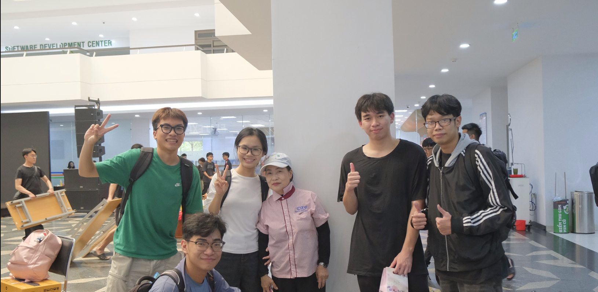
03Cô là lao công tại Trường Đại học FPT và đã từng biết đến Phấn Nụ Huế. Dù công việc hằng ngày khá bận rộn, cô vẫn quan tâm đến việc chăm sóc bản thân bằng sữa rửa mặt và serum dưỡng ẩm.
Mỗi viên Phấn Nụ được trao đi không chỉ là một món quà làm đẹp, mà còn là lời nhắn rằng mọi người phụ nữ đều xứng đáng được yêu thương và chăm sóc.
Toàn bộ 7 câu chuyện về Phấn Nụ NUZ — bấm vào từng thẻ để đọc nội dung đầy đủ.
Hơn cả một sản phẩm làm đẹp, Phấn Nụ NUZ là câu chuyện về sự kế thừa, gìn giữ và lan toả những giá trị truyền thống của xứ Huế qua thời gian.
Đọc thêm Nụ kể chuyện